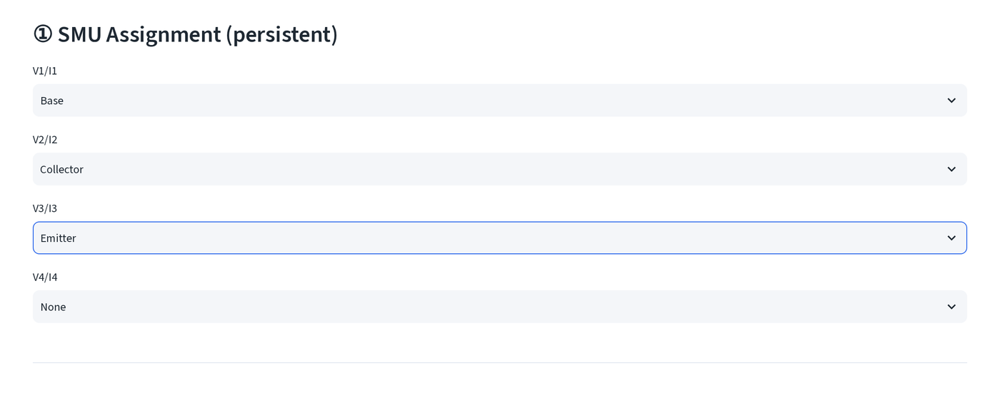
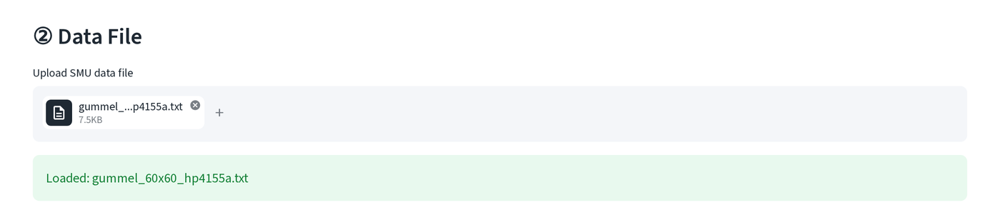
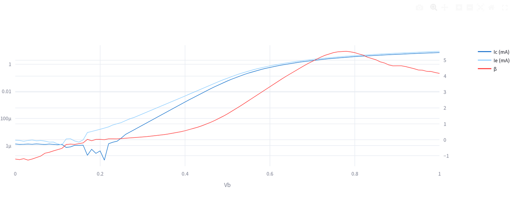
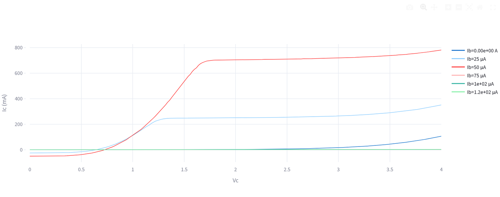
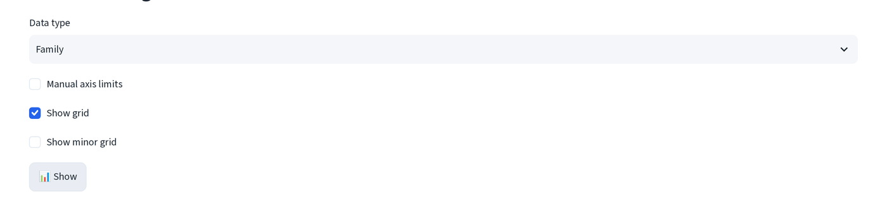

HP4155A quick plot¶
Interactive SMU plots straight from an HP/Agilent 4155A text export, no conversion step first. Sidebar DC Measurement → HP4155A Quick Plot.
The two demo files in guide/_data/dc/hp4155a/ aren't real 4155A exports, they're the guide's curated Gummel and Family B1500A CSVs, numerically
converted into 4155A column layout (see that folder's VERIFY.md for the
round-trip check). Use them to see the workflow; the underlying I, V data
is the same devices documented on the B1500A viewer page.
File format¶
Export from the instrument with List Display → Save ASCII, channel names left at their instrument defaults. The tool expects:
- A plain text table, tab- or comma-delimited, header row first, no preamble, row 0 is read straight as the column names.
- Column names exactly
V1,I1,V2,I2,V3,I3,V4,I4(any subset, you don't need all four SMUs wired). - Numbers in the instrument's scientific-notation style, e.g.
1.23456E-02.
Steps¶
- SMU Assignment, for each of the four V/I column pairs, pick which device terminal it drove: Collector, Base, Emitter, PD, or None. This choice persists across files and page reloads.

- Data File, upload the export. No file-type restriction, so anything that parses as a delimited table works.

- Plot Settings → Data type, Diode, Gummel, Family, or Family L-Ic-Vc, then Show. Family L-Ic-Vc needs a PD role assigned (it converts that channel's current to optical power via the responsivity field); plain Family only needs Collector and Base.
Reading the result¶
Gummel plots Ic and Ib on a shared log axis plus β on a linear right axis, same layout as the B1500A viewer's Gummel plot:

Family plots one Ic-vs-Vc curve per Ib step (SMU roles: Collector and Base only, no PD wired in this demo, so the export uses Family Ic-Vc, not Family L-Ic-Vc):

Export¶
Below every plot: a Download Excel button and a copy button side by side. Click this button to copy the data to your clipboard for easy pasting in Origin.
Other controls¶

- Manual axis limits: check it to get X min/max and Y min/max number inputs; leave unchecked for autoscale.
- Show grid / Show minor grid, gridline toggles, on by default for major, off for minor.
- Current traces auto-scale their unit (A/mA/µA) to whatever range the data falls in; the axis label updates to match.
- SMU role assignment (step 1) is shared with the batch HP4155A Data Processing Tool inside Measurement Data Multi-Process, same four dropdowns, same role names, different page.